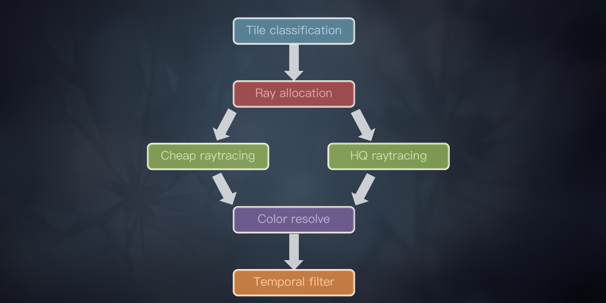
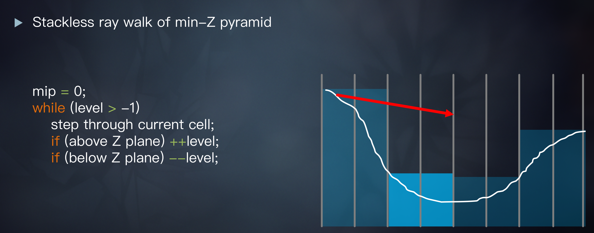
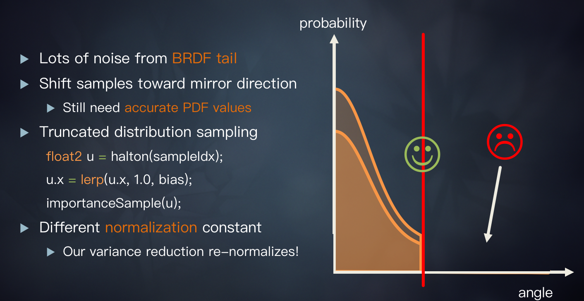
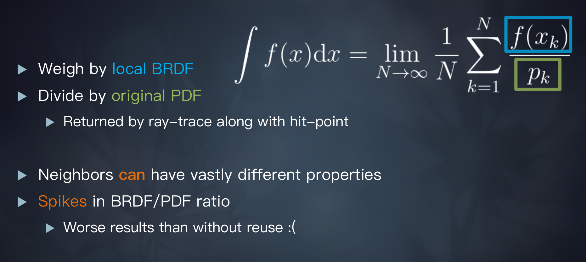
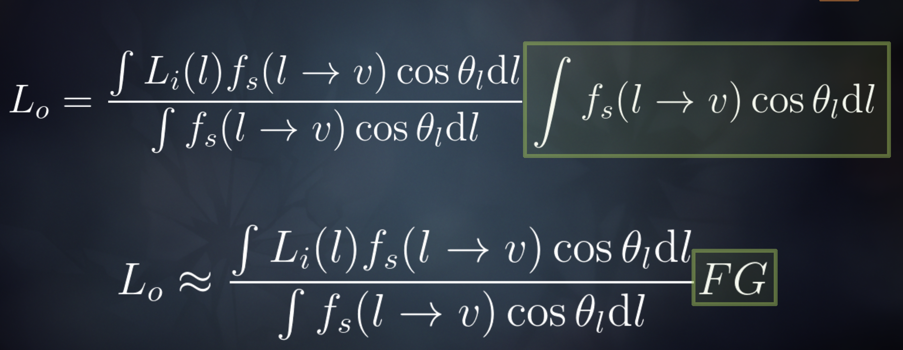
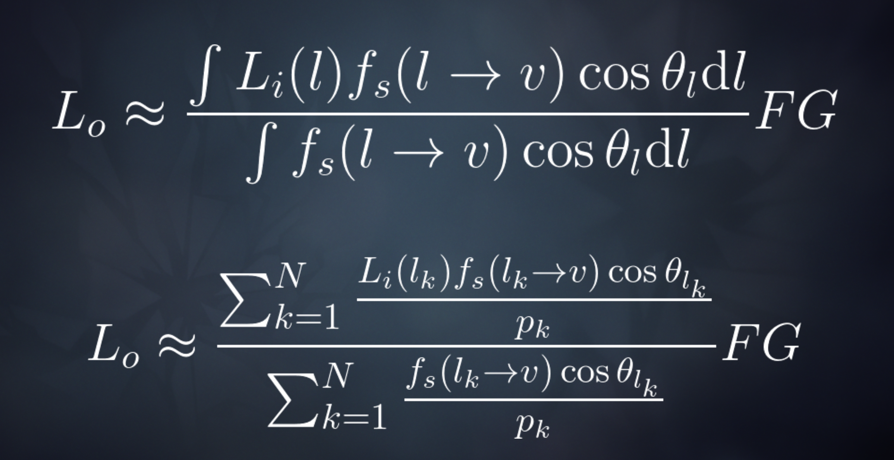

Stochastic Screen Space Ray Tracing
- tiled-based classification
- ray classification
- blur
- BRDF importance sampling
- hit point reuse ---> multi-pixel resolve
- temporal filter
- questions
 stochastic 体现在 importance sampling上。
{kind=link}
tiled-based classification
先以一个1/8的resolution去做试探性的RT，根据求交的结果来决定ray count.
{kind=link}
ray classification
- classify each pixel based on roughness.
- rt in low resolution
expensive rays
use this one on smooth surfaces, as for mirror-like reflections we would like the intersection points to be as precise as possible. - hierarchical ray tracing 
- Monte Carlo importance sampling
- use importance sampling of the BRDF in order to generate ray directions. Any BRDF can be used here; we happen to worship GGX.
- generating half-angle vectors, and reflecting them off the microfacet normal. This results in some rays actually pointing below the surface. We can’t use those, so we re-generate them a few times until we get nice ones.
- importance sample from the Distribution of Visible Normals 怎么重要性采样还要看看源码和多种方式验证下。
- ray reuse
- variance reduction ???
- importance sampling bias 
{kind=link}
{kind=link}
cheap rays
for rough reflections --> linear marcher
blur
solutions
BRDF importance sampling
hit point reuse ---> multi-pixel resolve
reuse
基于一种假设：neighbor point 的 visibility 和 target point 是一样的。  color 是用的 自己的 BRDF 算的，但是sampling 除以的 pdf 是用的 target point的。 如果相邻点的材质差别很大的话，会有问题。
{kind=link}
variance reduction
  造成方差很大的问题是绿色方框里的计算，上面的计算可以减少方差，FG是IBL预烘焙好的。不是特别懂，因为用了精确的FG，所以就更准确了么？？
{kind=link}
{kind=link}
resolve
instead of returning the colors immediately, we barely store the intersection points. Then we have a ‘resolve’ pass, which reuses those intersection points across neighboring pixels.
- resolve in full resolution
- Instead of fetching the high frequency color buffer for our reflections, we use appropriately pre-blurred versions of it.
- resolve four pixel at a time, each pixel has a unique mip level
- take the reflection distance into account
- weigh the contributions by each pixel’s BRDF ??? sampling的时候不是已经考虑过权重了，这个要看下实现
temporal filter
- denoising
- temporal reprojection calculate the average depth of the reflected objects, and reproject using that.